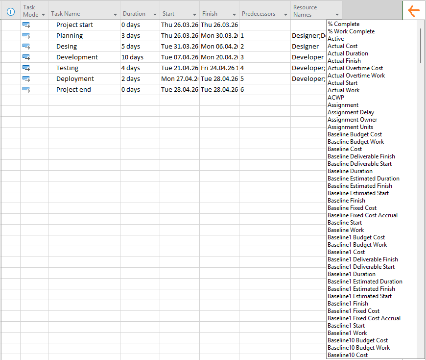
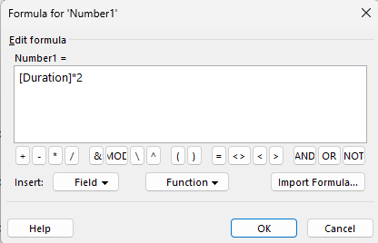
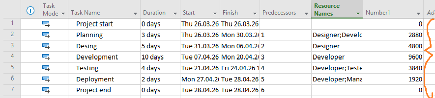

Arvutusvälja lisamine
Arvutusväli võimaldab luua automaatseid arvutusi projekti sees. Mina kasutasin seda, et arvutada ülesannete kestuse põhjal uusi väärtusi.
- Lisa uus veerg (Add New Column → Number1)
- Paremklõps veeru nimel ja vali Custom Fields
- Vajuta Formula ja sisesta valem


